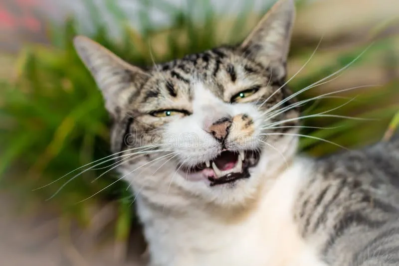
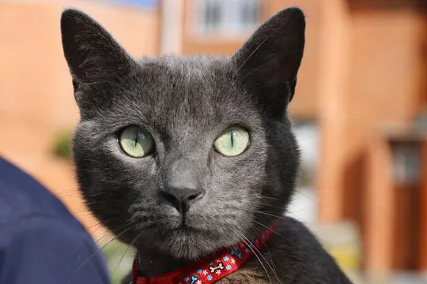
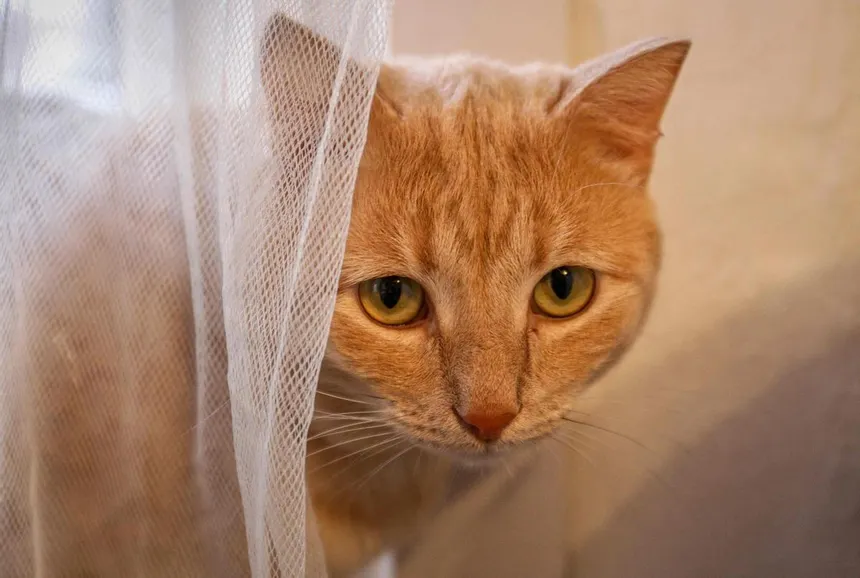
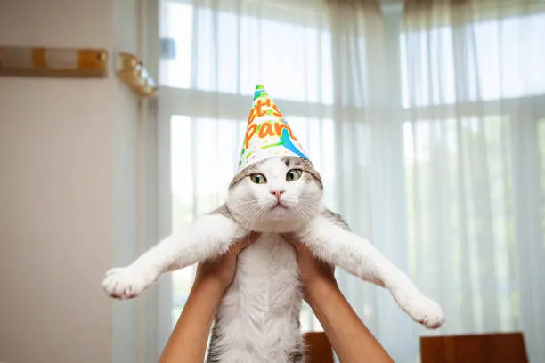
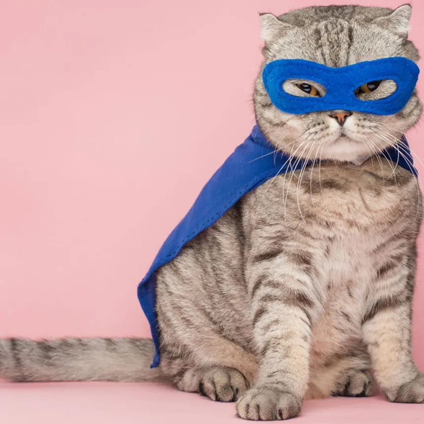
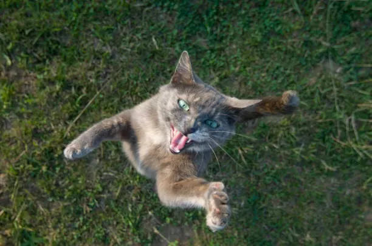
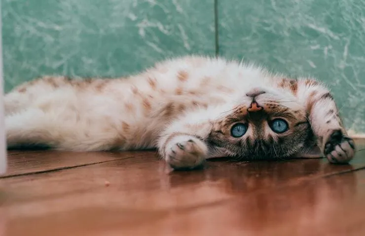

Esperando un hogar

1 año · Hembra

4 meses · Macho

6 meses · Macho

1 año · Macho
1 año los dos · Macho y Macho · Inseparables

9 meses · Hembra · Superheroína

3 años · Macho

3 meses · Macho